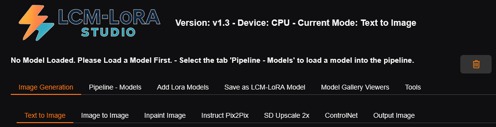
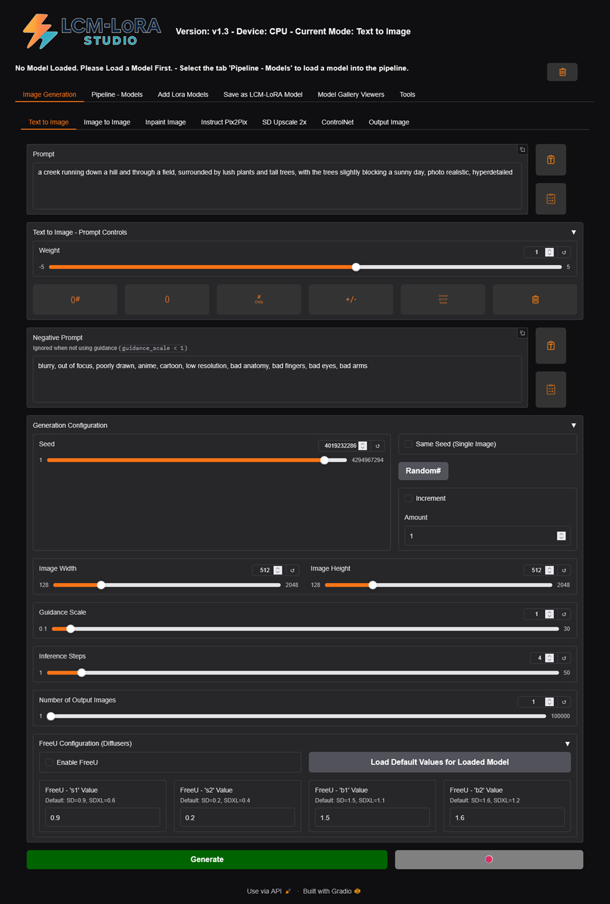

Create a high-quality image, in an average of ONLY 4 STEPS, using just a low-end CPU or a Raspberry Pi 5.
At it's basic core it generates images using common
StableDiffusion techniques. However add an LCM-LoRA to the base model and this enables a 4 Step inference
to generate images. This shorter number of steps allows us to generate images faster than the nomal 20-50
step de-noising process. LCM-LoRA Studio was mainly written for PC's with no good GPU, and the
Raspberry Pi 5 (both 8GB and 16GB versions) as a first step, in order to reduce inference time while
still generating high-quality images.
And to create special LoRA 'baked-in' types of models, in an, 'all-in-one' application.
Advantages:
Design:
This app is designed to address 2 issues that exist.

In essence, Load a SD/SDXL model into the LCM-LoRA Studio 'Pipeline', add the LCM-LoRA Weight to the 'Pipeline',
then you can generate an image in ONLY 4 STEPS. Then, if you like the results,
Save the 'Pipeline' as a New LCM-LoRA Model. Or add additional LoRA models for various fine-tuning tasks,
and Save that model as well.
See the block diagram below.

Image Generation (SD/SDXL)
Prompts
General Image Generation
Models - Pipeline
LoRA
General Features
Programmers-Hacking Features
Model: Original Stable Diffusion Base (SD) v1.5
LoRA: SD15 LCM-LoRA added to model with weight of 1.0
Image Size: 512 x 512
CFG: 1.0
Prompts: Normal, no embedded prompts.
| Operating System | CPU | RAM | Storage Type | Time per iter | Total time | SD Model / Prec |
|---|---|---|---|---|---|---|
| Windows 10 Pro | Intel(R) Core(TM) i5-12500T @ 2.00GHz | 16G | USB 3.0 FLASH | 6.34 s/it | 48 s | LCM-LoRA / FP16 |
| Windows 11 Pro | Intel(R) N95 @ (1.70 GHz) | 8G | USB 3.0 SSD | 8.23 s/it | 53 s | LCM-LoRA / FP16 |
| Windows 11 Pro | Intel(R) N95 @ (1.70 GHz) | 16G | USB 3.0 SSD | 8.04 s/it | 53 s | LCM-LoRA / FP16 |
| Raspberry Pi OS | Raspberry Pi 5 | 8G | Class10 SDCARD | 14.61s/it | 77 s | LCM-LoRA / FP16 |
| Raspberry Pi OS | Raspberry Pi 5 | 16G | PCIe 2.0 NVMe SSD | 13.19s/it | 71 s | LCM-LoRA / FP16 |
Inference time always goes up if there is an increase in, Image Size or CFG Scale, and SDXL models always take longer than SD models.
'Time per iter' comes from the 'diffusers' progress bar.
'Total time' comes from LCM-LoRA Studio. Starts when inference begins, Stops once the image is saved.
On MY Windows 10/11 systems I run a 'Pure Portable Python/AI System' off of an External USB 3.0 SSD, that I created which never touches the Windows Hard Drive. :)
Everything, Python, Git, FFMPEG, mingw64 and more..., Models, Huggingface Cache, Gradio Cache, TEMP folders, PIP and it's Cache, Source, Docs... Everything.
So it has to load Python, the libraries/imports, models ALL through the USB bottleneck. :(
I'll probably release details on that in a seperate repo or something at a later date once I'm done with this project, with it all packaged up and doc'd.
So, with...
1. Python actually installed on your system.
2. And, with the No USB bottleneck I get because of my particular setup.
It should perform faster on your system than my system (with same CPU/Speed/RAM etc..), mainly in the 'loading', 'saving' models area and other storage intensive tasks.
To install, ensure you are connected to the internet for installation of Python packages not in your pip cache, etc... Then later of course to download models, after that, it can work 100% Offline.
LCM-LoRA Studio can be installed right from Explorer.
Just navigate to the LCM-LoRA Studio folder and double-click:
install.bat
Open a terminal and navigate to the directory you unzipped 'LCM-LoRA Studio' to.
In the terminal type the following 2 command lines:
chmod +x *.sh
./install.sh
On both Windows and the Raspberry Pi 5, LCM-LoRA Studio installer will install the needed Python packages in order to run the app.
After installation of all of the packages, LCM-LoRA Studio will be ready to run.
To Run LCM-LoRA Studio, it is the same as the installation, from Explorer.
Just navigate to the LCM-LoRA Studio folder, but double-click:
run.bat
To Run LCM-LoRA Studio, In the terminal type the following command line:
./run.sh
On 'first-run', the app will go to Huggingface and download the 'Image Classifier' model used in LCM-LoRA Studio.
(unless already in your Huggingface Hub Cache). This is done to ensure the location, ie... path exists before LCM-LoRA Studio gets going, because they need to exist.
(I've had some instances that the enviroment variable for the Hub Cache folder 'HF_HOME' nor the 'HF_HUB_CACHE' existed until there is something downloaded.)
And, LCM-Lora Studio needs it, so we can later load a model from the cache via a simple dropdown inside the app.
The Image Classifier model, seeds the Hub Cache folder and the Image Classifier can be turned off later in the settings.
On some OSes, you may actually have to go into the settings and manually tell LCM-LoRA Studio the location of the Hub Cache folder.
To Run LCM-LoRA Studio, in a LOOP, on Windows, you can start it from Explorer.
Just navigate to the LCM-LoRA Studio folder and double-click:
restart.bat
To Run LCM-LoRA Studio, in a LOOP, on a Raspberry Pi 5
In the terminal type the following command line:
./restart.sh
About the Run LOOP method of starting LCM-LoRA Studio.
You can:
Note: With or without running LCM-LoRA Studio, via 'run' or 'restart' there is an Exit button in the App, try it.
Models used:
Latent Consistency Models (LCM) LoRA :
A universal Stable-Diffusion Acceleration Module by: Simian Luo, Yiqin Tan, Suraj Patil, Daniel Gu et al. : https://huggingface.co/latent-consistency
ControlNet:
ControlNet : https://huggingface.co/lllyasviel
Github: https://github.com/lllyasviel/ControlNet
Read the ControlNet Blog for more: https://huggingface.co/blog/controlnet
ControlNet Models used:
MLSD Line Detection: lllyasviel/sd-controlnet-mlsd : https://huggingface.co/lllyasviel/sd-controlnet-mlsd
HED Edge Detection: lllyasviel/sd-controlnet-hed : https://huggingface.co/lllyasviel/sd-controlnet-hed
Depth Estimation: lllyasviel/sd-controlnet-depth : https://huggingface.co/lllyasviel/sd-controlnet-depth
Scribble: lllyasviel/sd-controlnet-scribble : https://huggingface.co/lllyasviel/sd-controlnet-scribble
Canny: lllyasviel/sd-controlnet-canny : https://huggingface.co/lllyasviel/sd-controlnet-canny
Normal Map Estimation: lllyasviel/sd-controlnet-normal : https://huggingface.co/lllyasviel/sd-controlnet-normal
Image Segmentation: lllyasviel/sd-controlnet-seg : https://huggingface.co/lllyasviel/sd-controlnet-seg
OpenPose: lllyasviel/sd-controlnet-openpose : https://huggingface.co/lllyasviel/sd-controlnet-openpose
Other Thanks:
My Wife, and my family, who left me alone... with quiet... long enough to finish.
Do NOT use this project in any way to produce illegal, harmful or offensive content.
The author is NOT responsible for ANY content generated using this project, not limited to just models and images.
Licensed under the Apache License, Version 2.0